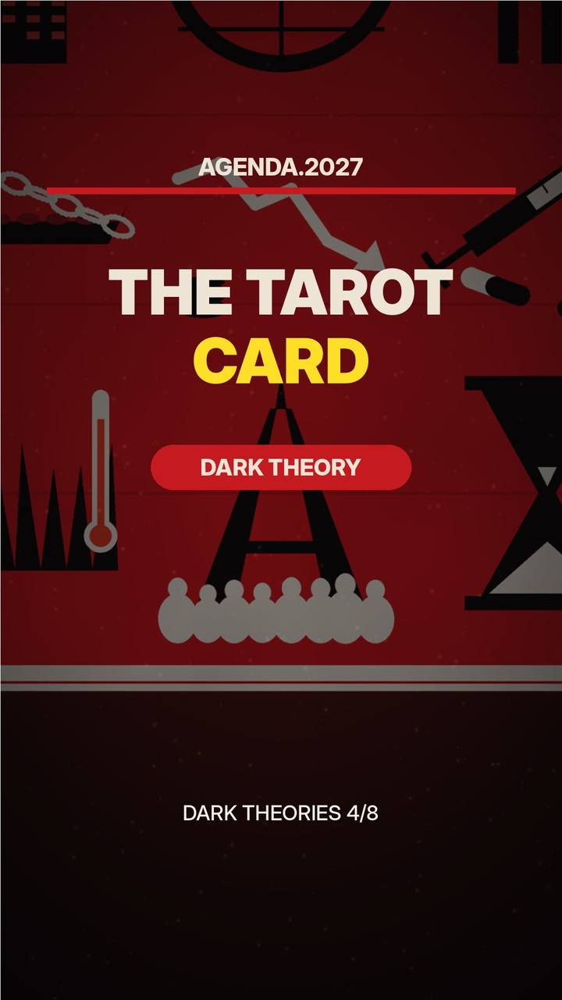

The tarot card
THEORY: this post discusses speculation. Each claim is marked as fact or theory, and we say where the theory breaks.

▶ Watch it on @agenda2027.dailyIn 2016, the cover drew the future as tarot cards. One card seemed to come true.
A yellow crowd card, two years before France's yellow vests. Eerie? The cover was about 2017; the protests began in late 2018.
One hit remembered, the rest forgotten.
Sources named in the video
- The Drum · Dec 2019
Eerie or easy? Tell us in the comments on Instagram.
Follow @agenda2027.daily